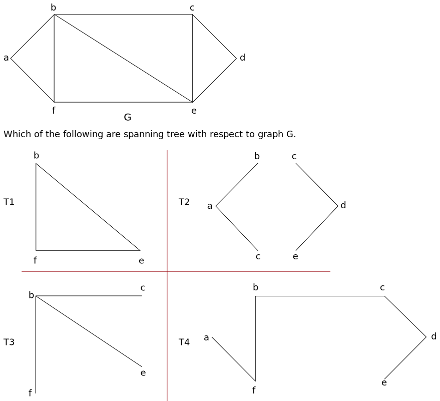

Tree
- A connected graph that contains no cycles (circuits) is called a tree. A tree is a simple graph i.e neither having self loop nor parallel edges.
- Example:
- Chain reaction
- Flow of electricity
- Administrative set up in an organization
- A tree 'T' with only one vertex is called a trivial or degeneral tree or empty tree otherwise 'T' is a non trivial tree.
- The number of vertex in a tree is called order of the tree.
Properties
- A tree with 'n' vertices has n-1 edges.
- There is one and only one path between every pair of vertices.
- It is minimally connected graph.
- Every non-trivial tree has two or more pendent vertices.
- Pendent vertex → A vertex is said to be pendent vertex or an end vertex if its degree in one.
Terminologies
- Eccentricity → Eccentricity of a vertex 'v' of a graph 'G' (or Tree 'T') is denoted by E(v)
which is the distance from 'v' to the vertex farthest from 'v' in 'G'.
i.e., E(v) = Max d(v, vi), vi ∈ G.
- Centre → A vertex of graph 'G' with minimum eccentricity is called the centre of 'G'.s
- Radius → The eccentricity of a centre in a tree is defined as the radious of the tree.
Binary tree
- A binary tree is rooted tree in which every vertex has at most two children and each child of a vertex is designated as its left child or right child.
- The subtree rooted at the children of the root are the left subtree and the right subtree of the tree.
Full or complete binary tree
- A binary tree in which every vertex has either zero or two subtrees is said to be a full binary tree i.e., each vertex has either two or zero children.
Note ↓
- In a full binary tree there is exactly one vertex with degree 2 i.e. root and all other vertices have degree 1 or 3.
- A full binary tree will always have odd number of vertices say n.
Proof:
Since there is exactly one vertex (root) of even degree & the remaining (n-1) vertices are of odd degree, but the number of vertices of odd degree in a graph is always even therefore n-1 is even, hence n is odd.
Binary Search Tree
- A binary search tree (BST) is a binary tree in which each node has value greater than every node of left subtree and less than every node od right subtree.
- BST is very usefull data structure for searching of a node in minimum amount of time.
Spanning tree
- A subgraph 'S' of a connected graph G(V,E) is called a spanning tree of G if
- S is a tree
- S conatins all the vertices of G.
- An edge of a spanning tree T is called branch of T.
- An edge of G that is not in a given spanning tree T is called a chord.
- With respect to any of its spanning tree, a connected graph of n vertices and e edges has n-1 branches and e - n + 1 chord.
- A connected graph G is a tree if and only if adding an edge between any two vertices in G creates exactly one cycle.
- Rank(r) = n - 1 [the number of branches of the graph]
- Nullity(µ) = e - n + 1 [the number of chord]
- Rank + nullity = number of edges in G.
Example ↓
- Remove all the subgraph which are not tree:
- Tree contains all the vertices and all vertex should be connected.
- There should not be a circuit.
- Now subgraph T4 fullfills all the conditions.
- Branch of T4 spanning tree are : af, fb, bc, cd and de
- Chord: ab, be, fe and ce
Fundamental circuit
- Video lecture ⇗
- Let G be a connected graph & T is spanning tree with respect to G.
- A circuit formed by adding a chord to spanning tree T is called fundamental circuit.
- G graph having 'e' edges & 'n' vertices and T is spanning tree with respect to G having n-1
branches & (e - n + 1) chords.
∴(e - n + 1) fundamental circuits can be formed.
All spanning tree of a complete graph.
- If there are 'n' vertices then nn-2 spanning trees are possible.
Example: Find all spanning tree of following complete graph ↓
Minimal Spanning tree
- A spanning tree in a weighted connected graph G with smallest weight is called a minimal spanning tree or shortest spanning tree or shortest distance spanning tree.
- Note:
A graph can have more than one minimal spanning tree. - There are two algorithm to find the MST
- Kruskal’s algorithm
- Prim's algorithm
Kruskal's algorithm
There are 4 steps
- List all the edge weight of the graph G in ascending order of weight.
- Select edge with smallest weight, this is the first edge of spanning tree T. In case there exist more than one of smallest weight, arbitarily choose one of them.
- Select from all the remaining edges of G having smallest value that does not form a circuit with the edges already included in T.
- Continue step 3 until (n-1) edges have been selected, these edges will constitute the required shorted spanning tree.
Find the minimal spanning tree using Kruskal’s algorithm ↓